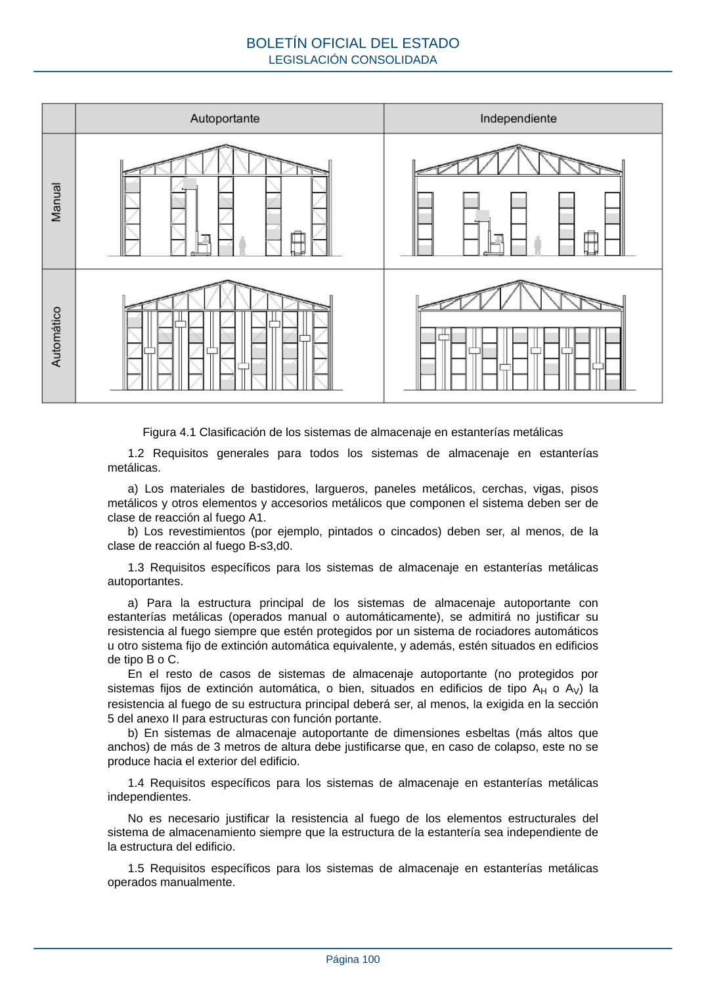

RSCIEI · edición 2025-04-10 · capa asociada
Documento RSCIEI-asociada · SHA-256 del PDF 85aa0af25d51e5b58d8975a4eefbf76d3f57a8933445cfe814ae9c4818a2e3e7
Página física 100 de 108.
Copia fiel del PDF fuente · Fuente oficial
Ficha de la disposición en la fuente oficial
Texto extraído y reorganizado: Basado en datos de la Agencia Estatal Boletín Oficial del Estado. PDF reproducido: Fuente de los datos: Agencia Estatal Boletín Oficial del Estado.
Formato: Texto de la página (Markdown)
Figura 4.1 Clasificación de los sistemas de almacenaje en estanterías metálicas 1.2 Requisitos generales para todos los sistemas de almacenaje en estanterías metálicas. a) Los materiales de bastidores, largueros, paneles metálicos, cerchas, vigas, pisos metálicos y otros elementos y accesorios metálicos que componen el sistema deben ser de clase de reacción al fuego A1. b) Los revestimientos (por ejemplo, pintados o cincados) deben ser, al menos, de la clase de reacción al fuego B-s3,d0. 1.3 Requisitos específicos para los sistemas de almacenaje en estanterías metálicas autoportantes. a) Para la estructura principal de los sistemas de almacenaje autoportante con estanterías metálicas (operados manual o automáticamente), se admitirá no justificar su resistencia al fuego siempre que estén protegidos por un sistema de rociadores automáticos u otro sistema fijo de extinción automática equivalente, y además, estén situados en edificios de tipo B o C. En el resto de casos de sistemas de almacenaje autoportante (no protegidos por sistemas fijos de extinción automática, o bien, situados en edificios de tipo AH o AV) la resistencia al fuego de su estructura principal deberá ser, al menos, la exigida en la sección 5 del anexo II para estructuras con función portante. b) En sistemas de almacenaje autoportante de dimensiones esbeltas (más altos que anchos) de más de 3 metros de altura debe justificarse que, en caso de colapso, este no se produce hacia el exterior del edificio. 1.4 Requisitos específicos para los sistemas de almacenaje en estanterías metálicas independientes. No es necesario justificar la resistencia al fuego de los elementos estructurales del sistema de almacenamiento siempre que la estructura de la estantería sea independiente de la estructura del edificio. 1.5 Requisitos específicos para los sistemas de almacenaje en estanterías metálicas operados manualmente. BOLETÍN OFICIAL DEL ESTADO LEGISLACIÓN CONSOLIDADA Página 100
